Find a Hidden River
Taro Matsuzawa @smellman
Georepublic Japan
about me
- Programmer at Georepublic Japan
- Member of Mozilla Community in Japan. Author of two japanese books about Firefox (Firefox 3 Hacks, Firefox Hacks Rebooted)
- Speaker of FOSS4G, title is "SVGMap - Tilemap without Javascript"

my company
Georepublic supports OpenStreetMap because CEO, CIO and others(include me) are Mapper.
Hal Seki - CEO
 Daniel Kastl - CIO
Daniel Kastl - CIO
Where I live
I live at Sendagaya in Tokyo.
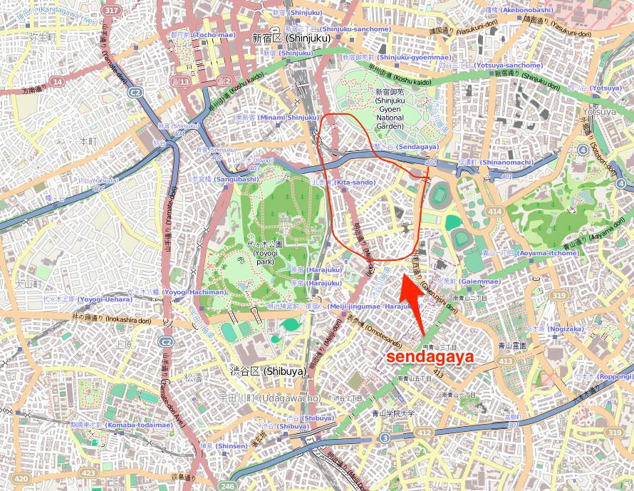
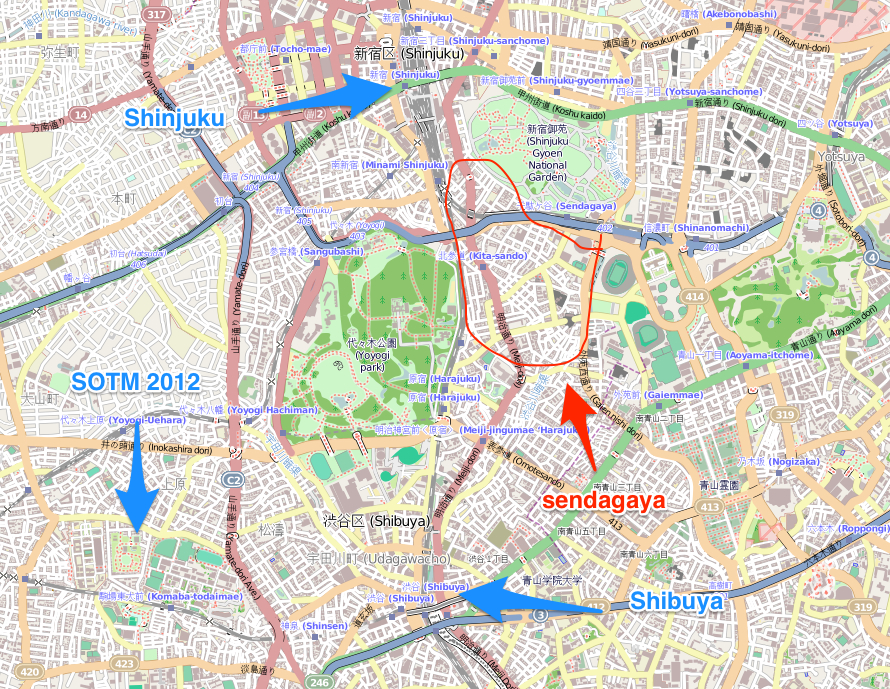
The town is near Shinjuku Gyoen. It's a beatiful park.
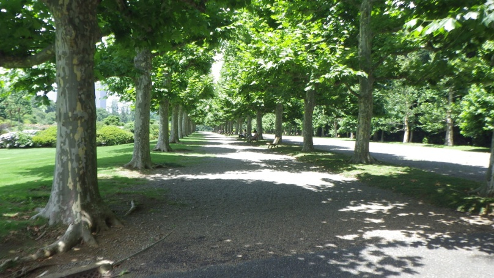
wrong data
When I surveyed at Shinjuku Gyoen, I found wrong data.
nonexistent river
I don't know this river.
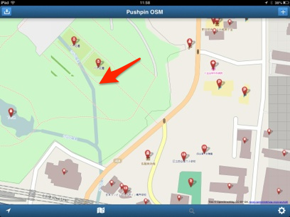
If this river exist, like this:
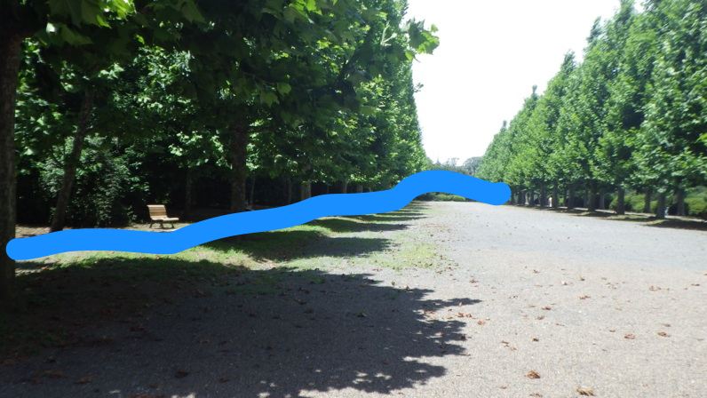
What is this data?
The river name is "渋谷川暗渠"(Shibuyagawa-Ankyo).
Shibuyagawa is mean "Shibuya river", what is "Ankyo"?
Ankyo
Ankyo is "blind ditch" or "underground drain".
I don't know about Ankyo until searching in Google:-(
in Google
I found that:
Too many parts of Shibuya river are covered with concrete by redevelopment at Tokyo Olympics in 1964.
We need to research using a map before 1960s.
Old map
I use "今昔散歩"(Konjaku-sampo) application.
It is a smartphone application for iOS or Android.
It can show three maps(Edo era (1603-1867) map, Meiji era (1868-1912) map, and OS's map).
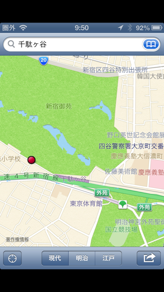 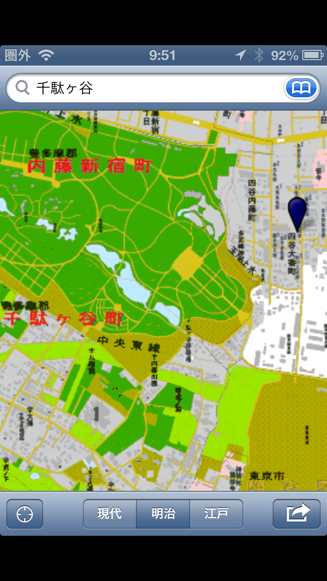 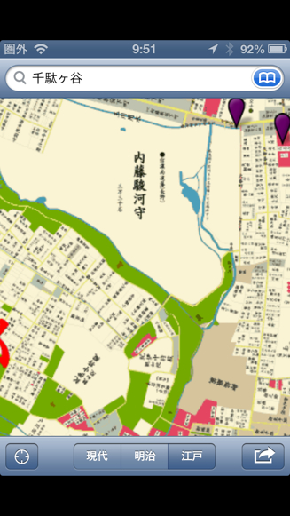
Survey
I searched old river using Meiji era maps.
I started at Meiji park and walk with looking that application.
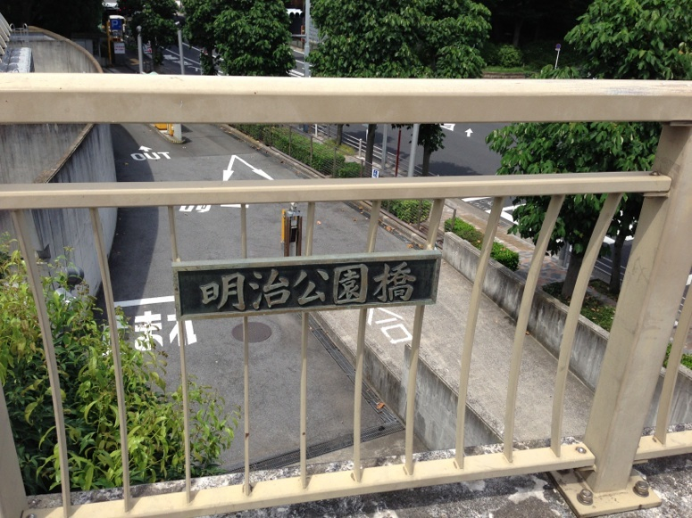
Found a remains
I found a Ankyo's remains near police station.
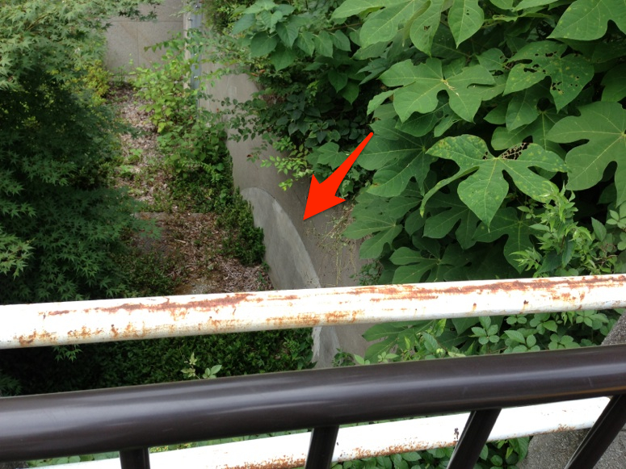
complete survey
I walk along this river, up north and I found end of shibuyagawa.
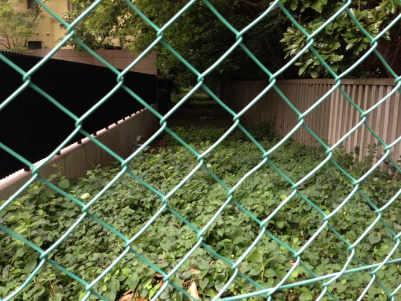
result
Shibuyagawa is a border of Shinjuku-Gyoen.
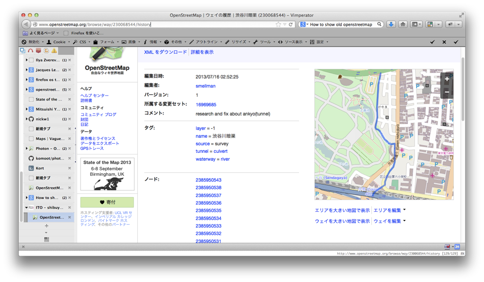
I learned
Survey with old map is fun.
Next
End of shibuyagawa equals Start of 玉川上水(Tamagawa Jousui).
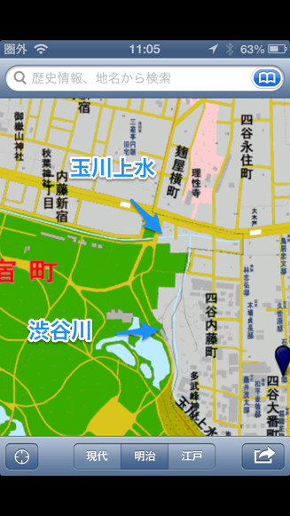